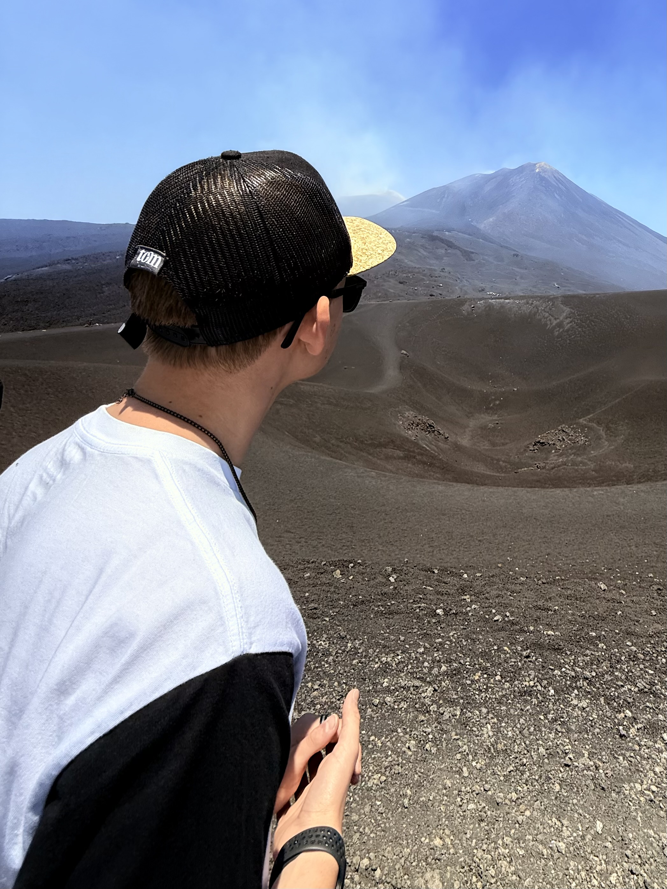

Hi! Ich bin Lukas, auch bekannt als LukasXmediA. Ich liebe Gaming, besonders Simulatoren und Story Games. Nebenbei interessiere ich mich für Technik, Schlagzeug und Handball. Wir sehen uns dann mal vielleicht in nem Stream, Video oder Reel!

Als Creator teile ich meine Leidenschaft für Gaming, Technik, Fotografie, Drums und DJing. Ob auf YouTube, Twitch oder Instagram – ich möchte kreativ sein, unterhalten und meine Projekte mit der Welt teilen.